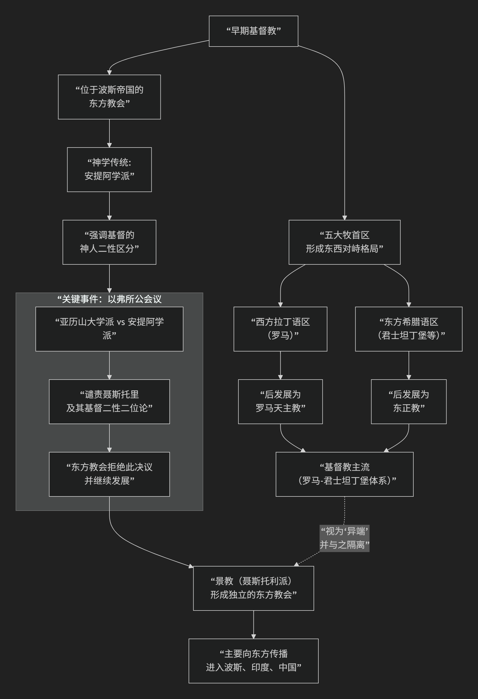

中国的“景教”
历史上传入中国的“景教”，其所属的派别在基督教发展史中非常独特，并且是一段重要的中西文化交流篇章。
景教属于基督教的一个古老派别——东方教会（Church of the East），在神学上因其创始人而被称为聂斯托利派（Nestorians）。 它既不属于天主教（罗马公教），也不属于东正教，而是早期基督教世界独立发展的“第三支”。
为了更直观地理解景教在基督教历史中的定位及其神学争议的焦点，您可以参考以下图示：

以下是对这一问题的详细说明：
一、景教的源头：聂斯托利派争议
要理解景教，必须从一场5世纪初基督教世界的神学争论说起。
核心争议：关于耶稣基督的神性和人性如何结合。
争论双方：
亚历山大学派：强调神人二性的“合一”，主张“上帝之母”的称号适用于耶稣的母亲玛利亚。
安提阿学派（聂斯托利所属）：强调神人二性的“区分”，认为耶稣的神性和人性是分开的，玛利亚只是“基督之母”或“人之母”，而非“上帝之母”，以避免将上帝贬低为可生的受造物。
会议定性与流放：公元431年，以弗所大公会议将聂斯托利的主张定为“异端”，并将其罢免、流放。他的追随者也遭到迫害。
二、成为东方教会：向波斯与东方的传播
被罗马帝国驱逐后，聂斯托利的追随者们向东迁徙，进入了波斯帝国（萨珊王朝）的疆域。
独立发展：在波斯，他们脱离了罗马/拜占庭帝国的控制，形成了一个独立的基督教中心，即 “东方教会” 或 “迦尔底亚教会”。
神学特色：该教会保持了安提阿学派的神学传统，强调基督二性的区分，被其西方对手称为“聂斯托利派”。
向东传教：东方教会成为了一个极具传教热情的团体，其传教路线不是向西，而是沿着丝绸之路向东传播，进入了印度、中亚，并最终于唐朝贞观九年（公元635年） 由传教士阿罗本传入中国，当时中国人称其为“景教”。
三、景教与天主教、东正教的核心区别
特征 |
景教（东方教会/聂斯托利派） |
天主教/东正教 |
|---|---|---|
基督论 |
强调基督的“神性”与“人性”之别， |
强调基督“神人二性”的合一 |
历史渊源 |
源于被罗马帝国排斥的安提阿学派，在波斯帝国独立发展。 |
是罗马帝国境内基督教的主流传承。 |
教会权威 |
不承认罗马教皇或君士坦丁堡牧首的权威，自有其宗主教（天主教）。 |
各自有完整的教皇体系或牧首体系。 |
传播方向 |
主要向东方（波斯、印度、中亚、中国、蒙古）传播。 |
主要向欧洲及周边地区传播。 |
四、景教在中国的兴衰
传入：公元635年，阿罗本抵达长安，受到唐太宗礼遇，这是基督教首次传入中国。
发展：景教在唐朝曾一度兴盛，有“法流十道，寺满百城”的记载。西安碑林博物馆藏的 《大秦景教流行中国碑》 （公元781年）是景教在中国存在的铁证，碑文用中文和叙利亚文写成，融合了基督教与佛教、道教术语。
消亡：唐武宗会昌五年（公元845年）的 “会昌灭佛” 事件，打击了所有外来宗教，景教也受重创，在中原地区逐渐消亡。但在北方和西北的少数民族（如蒙古克烈部、汪古部）中仍有留存。元朝时再次传入，被称为“也里可温教”，但随元朝灭亡而再次中断。
总结
总而言之，景教是基督教古老支派“东方教会”在中国唐代的名称。它并非来自欧洲的天主教或东正教，而是源自中东波斯地区的一个独立基督教传统。其神学思想在西方主流教会看来是“非正统”的，但它却是中世纪早期最具国际视野的基督教团体，在沟通东西方文明、将基督教思想首次引入中国方面，写下了不可磨灭的一页。
今日延续：该教会的现代传承被称为 “东方亚述教会” ，信徒主要分布在伊拉克、伊朗、印度等地。